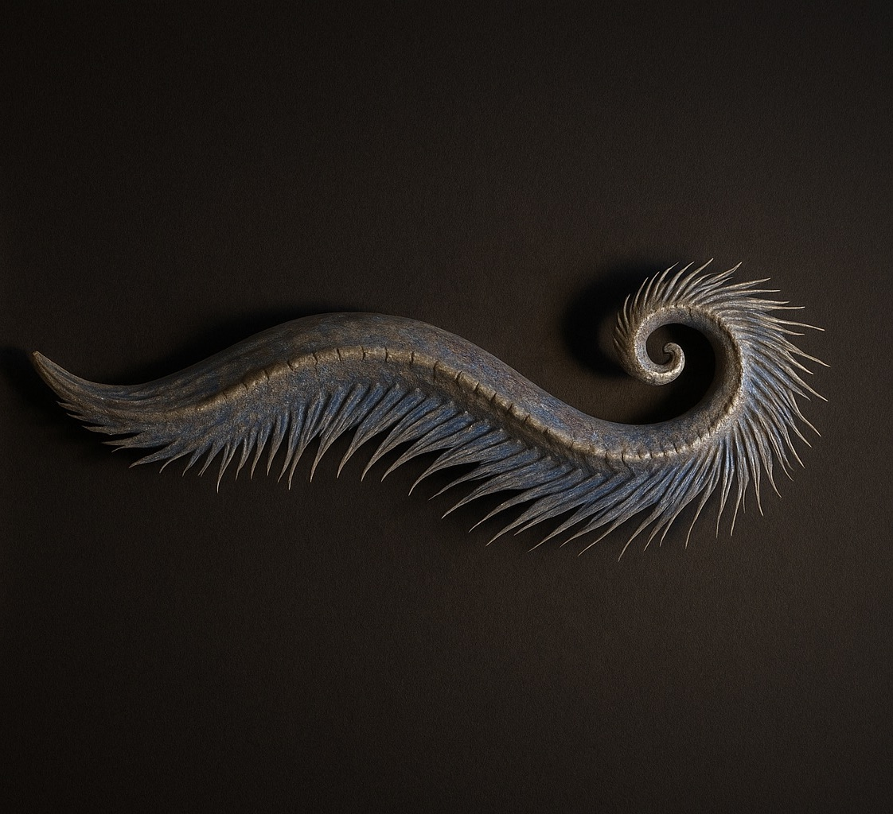
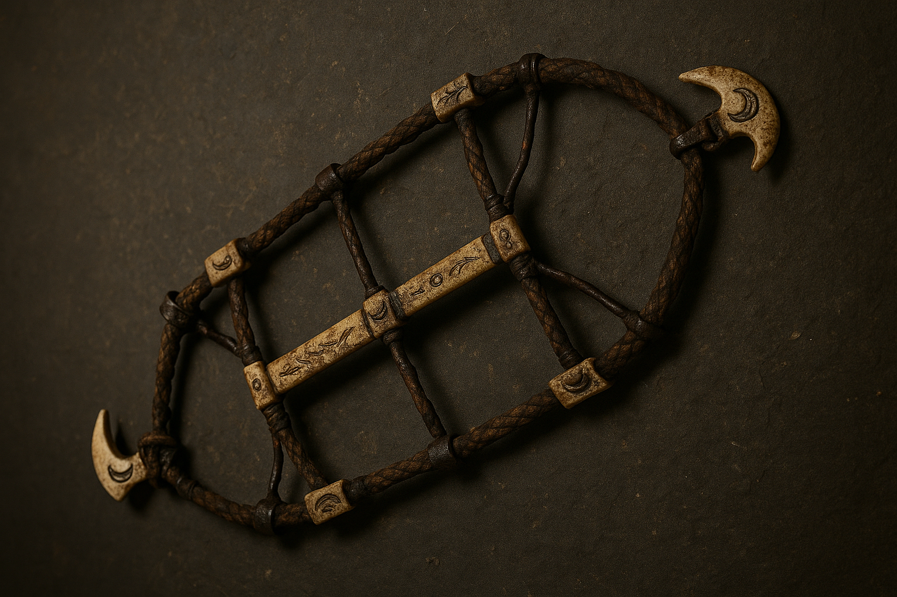
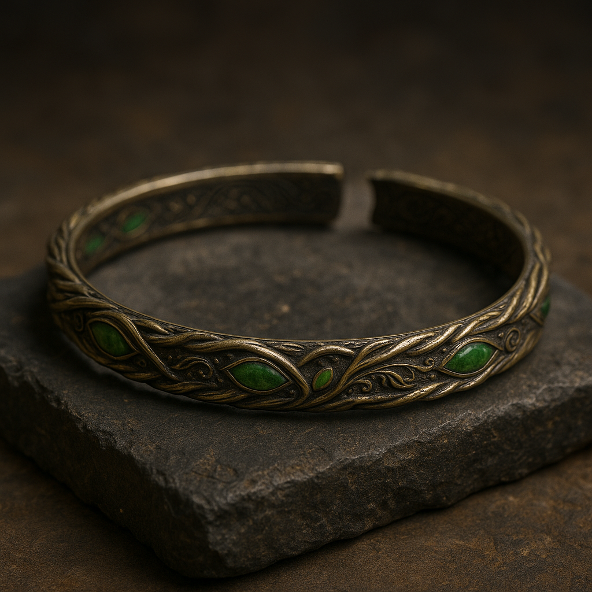
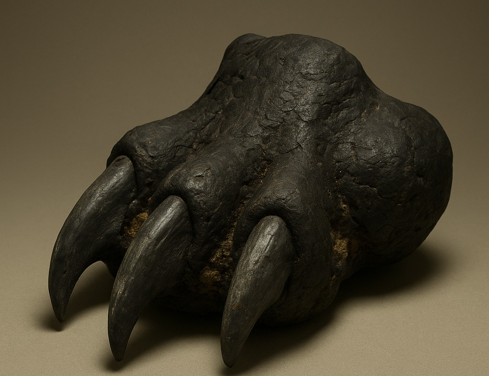

Welcome to The Enchanted Emporium
Step into a marketplace woven from the threads of myth and memory, where every trinket carries a whisper of the worlds beyond. Here, relics of forgotten realms rest beside charms born of fireside tales, each infused with the essence of creatures long sung about in hushed tones. From dragon-scale curios to moonlit talismans, every piece holds a fragment of wonder—waiting to find its way into your keeping. This is no ordinary shop; it is a gateway, a place where souvenirs become storykeepers, and the magic of legend can follow you home.
Ventral Rib Fossil – Draconis Altiventris
Replica of a rare fragment from the thoracic frame of the legendary Draconis altiventris, believed to aid in the creature’s fiery breath. This 1.3-meter fossil, with its ridged underside and slate-ochre hues, was unearthed from volcanic ash layers in the Southern Caucasus. Scorch marks and mineralized marrow hint at a life steeped in heat and flame—making it a tangible relic of dragonkind’s mythic past.

Laryngeal Crest of Siren Pelagis Nocturna
Replica of a rare spiral of calcified cartilage from the fabled midnight siren, believed to house the organ that shaped her hypnotic song. Preserved for over five millennia in a tidal cave of the Aegean, its iridescent ridges shimmer under ultraviolet light, whispering of moonlit waters and voices that could still the storm. A haunting relic of oceanic myth, captured in the hush of the deep.

Bloodbound Cradle Stone
Replica of an oval altar of hematite-laced limestone, its smooth basin once cradled rites of blood and rebirth. Carved over four millennia ago and sealed deep within the Ghorat Caverns, the stone bears faint spirals and claw-scratches—silent witnesses to ancient transformations. Cool to the touch yet heavy with legend, it is a relic steeped in the shadowed heart of vampire lore.

Moon-Clasp Ritual Harness
Replica of the artifact. Woven from sinew, iron, and carved wolf-bone, this ancient harness once bound the chosen beneath the gaze of the moon. Etched with lunar phases and worn smooth by ritual use, it was unearthed from a sealed chamber beneath a collapsed stone circle in the Carpathian Basin. Fragments of blood and ash cling to its clasps—silent traces of ceremonies meant to summon or restrain the beast within.

Sylvan Memory Circlet
Replica of the artifact that's braided from electrum and set with leaf-carved greenstones, this luminous circlet was unearthed from a solstice-aligned tomb deep within the Black Forest. Its etched vines and constellations speak of rites to preserve ancestral memory, while faint wear marks whisper of a life once crowned in quiet authority. Even now, under dim light, the gems seem to hold the glow of forgotten seasons.

Calcified Paw Core – Cerberus Infernicus
Replica of the artifact, excavated from a scorched altar pit in the Sicilian Highlands, this fossilized triple-claw core bears the blackened sheen of volcanic fire and the weight of ancient myth. Its fused joint base and fractured tips hint at crushing force, while embedded sulfur crystals exude a faint, otherworldly scent. Said to be the remnant of the underworld’s gatekeeper, it stands as a grim relic of realms best left unopened.
